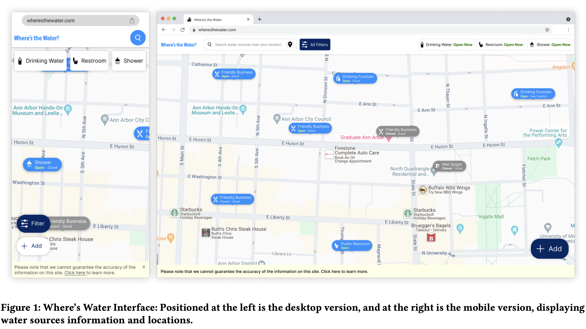

|
Nina Ziwei Chen My name is Nina Ziwei Chen. I am currently a product designer at Dusty Robotics in Mountain View, where I design robot control app for construction professionals to print digital layouts on the ground. I am also working with Prof. Kristen Vaccaro as a researcher in the Computer Science and Engineering department at UC San Diego. I obtained my master’s degree in Information from the University of Michigan. At the UM, my research, advised by Prof. Florian Schaub, focused on addressing water access challenges faced by the homeless population and exploring how digital tools can bridge the information gap. This project won first prize in the CHI 2024 Student Design Competition and led to a co-first-authored publication in the CHI EA ’24. Email / CV / Scholar / Github / Design Portfolio |

|
ResearchMy recent research interests focus on digital harms and frictions that arise during interactions between people and algorithms or AI in social computing applications. I am particularly attentive to users' experiences and explore how to design systems that effectively support their needs. |
|

|
Where’s the Water? Supporting Clean Water Access for the Homeless Community
Alexandra Balmaceda*, Ziwei Chen* (* denotes equal contribution) CHI EA, 2024 2024 CHI Student Design Competition Winner (top 2 out of 43 submissions) paper page/ competition presentation/ winner posts Access to clean water is essential, yet it poses a significant challenge for the homeless population. Our project, ’Where’s the Water,’ is a web-based tool designed to improve water access for the homeless community. It maps nearby clean water sources like drinking fountains, public restrooms, and showers. The tool’s design was informed through interviews with the homeless community in Ann Arbor, Michigan. The insights gained from these interviews were further supported by key findings from recent studies related to homelessness and water access. Besides locating, our tool’s functionality also includes filtering sources for operational hours and water quality. It features crowd-sourcing, allowing users to add new sources on the map, effectively utilizing community knowledge. In this article, we describe our research and design approach, highlighting the community and organizational feedback that helped turn our concept into a useful tool. |
|
Template adopted from Jon Barron |